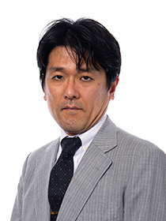
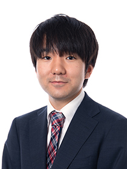
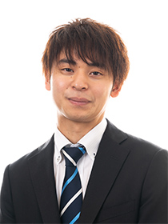
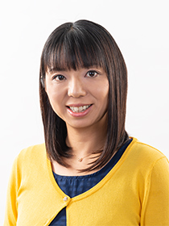
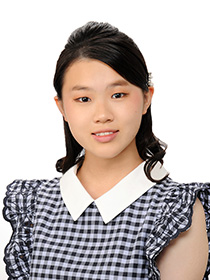

本日の対局(7月1日)
- 王位戦第1局 木村一基 - 藤井聡太
- 竜王戦5組昇決 窪田義行 - 山本真也
- 竜王戦5組昇決 渡辺正和 - 南芳一
- 竜王戦5組残決 日浦市郎 - 牧野光則
- 竜王戦6組昇決 本田奎 -  斎藤明日斗
- 竜王戦6組昇決 門倉啓太 - 藤原直哉
- 竜王戦6組昇決 島本亮 - 福崎文吾
- 王座戦挑決トーナメント 久保利明 - 飯島栄治
- ヒューリック杯棋聖戦一次予選 八代弥 - 杉本和陽
- ヒューリック杯棋聖戦一次予選 村中秀史 - 増田康宏
- ヒューリック杯棋聖戦一次予選
 八代か杉本 - 村中か増田
八代か杉本 - 村中か増田 - ヒューリック杯棋聖戦一次予選 豊川孝弘 - 小林健二
- ヒューリック杯棋聖戦一次予選 伊奈祐介 - 豊川か小林
- リコー杯女流王座戦二次予選 貞升南 - 中澤沙耶
- リコー杯女流王座戦二次予選 本田小百合 -  藤井奈々
- 倉敷藤花 上田初美 - 中村真梨花


- 竜王戦
- 竜王戦中継サイト
- 名人戦・順位戦
- 名人戦棋譜速報
- 叡王戦
- 叡王戦中継サイト
- 王位戦
- 王位戦中継サイト
- 王座戦
- 王座戦中継サイト
- 棋王戦
- 棋王戦中継サイト
- 王将戦
- 毎日新聞ニュースサイト
- ヒューリック杯棋聖戦
- ヒューリック杯棋聖戦中継サイト
- 朝日杯将棋オープン戦
- 朝日杯将棋オープン戦中継サイト
- 将棋日本シリーズ
- JTプロ公式戦棋譜中継
- 新人王戦
- 新人王戦中継サイト
- 加古川青流戦
- 加古川青流戦中継サイト
- ヒューリック杯清麗戦
- ヒューリック杯清麗戦中継サイト
- マイナビ女子オープン
- マイナビ女子オープン in 将棋情報局
- リコー杯女流王座戦
- リコー杯女流王座戦中継サイト
- 岡田美術館杯女流名人戦
- 女流名人戦中継サイト
- 女流王位戦
- 女流王位戦中継サイト
- 大山名人杯倉敷藤花戦
- 大山名人杯倉敷藤花戦中継